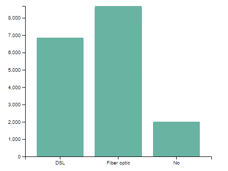
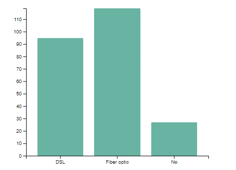

D3 Visualization Project
Problem Statement for the Project
Telco Company is a telecommunication company and it looks on better ways to understand its products.
Telco Company offers different internet services which their customers can subscribe to and enjoy their services.
The company now wants to evaluate how the different internet services offered by the company has been performing so far.
The Company usually collects data on how each of its customers spends on their internet services.
They now need to understand the data and gain insight about the data. Gaining insight on the data would greatly help them know which of the products or services is under-performing.
Visualizing the data would help the company understand the data it has on the different internet services offered.
By gaining insight on the data, the company will be able to review the performance of each product or service.
Choice and Source of Data
The dataset used for this project contained information on the monthly spending on the customers on each of the different internet services that the company offers.
The total spending by each customer on each of the different internet services offered by the company was also contained in the dataset.
The data was obtain from a public GitHub repository and the link to the original dataset is https://www.kaggle.com/code/bandiatindra/telecom-churn-prediction/data.
To speed up the process of loading, the dataset was uploaded to GitHub. This enabled to D3 library to load and parse the data fast.
Design Choice for a Visualization
The objective of the project was to compare the different internet services offered by the company to its customers. To achieve this, the project used a bar graph, as this would enable the side-by-side comparison of the different internet services offered by the company. The bar plot was used to compare the different internet services offered on the basis of Monthly Income from customers and on the total income to the company. Adding interactivity to the plot enabled the internet services to be compared side-by-side on both the metrics. The plots maintained a minimalistic green color for the plots and buttons for interactivity.
Findings and Insights
The visualization showed that there were two types of internet services namely, Fiber Optics and DSL.
Other Customers only subscribed to other services other than the internet services.
On both metrics, the company largely makes its money from offering internet services.
The income from the customers who were non-internet subscribers was less compared to the amount the company earned from internet service subscribers.
Of the internet service, the best performing service was the Fiber Optics subscription.
The Fiber Optics outperformed the DSL on both monthly income from the customers and the total income earned from the subscribers.

